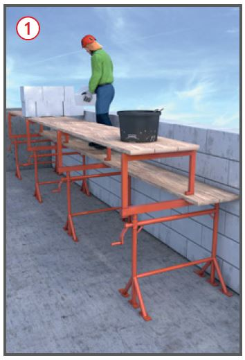
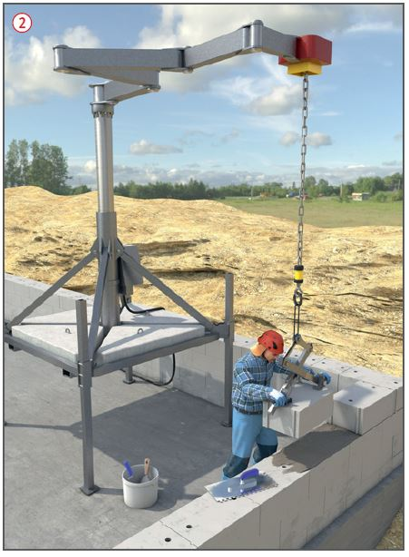
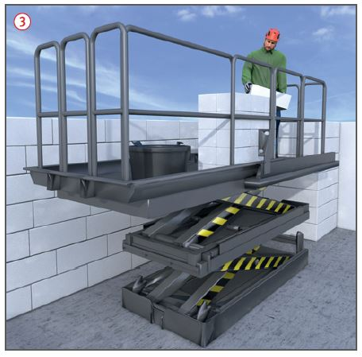
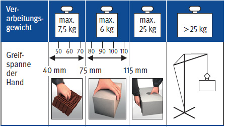
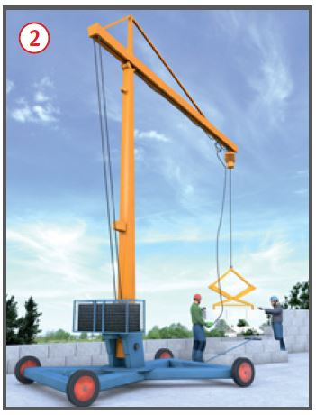

Verarbeiten großformatiger Mauersteine
|
|

Gefährdungen
- Bei fehlenden oder mangelhaften Absturzsicherungen an hochgelegenen Arbeitsplätzen kann es zu Absturzunfällen kommen.
- Nicht oder unzureichend sicher angehobene Mauersteine
können abstürzen und zu Verletzungen führen.
- Heben, Tragen oder Versetzen
von schweren Mauersteinen kann zu Muskel-Skelett-Erkrankungen führen.
Schutzmaßnahmen
- Bei Einhand-Mauersteinen
darf das Verarbeitungsgewicht*
bei einer Greifspanne
- von mindestens 40 mm und
höchstens 75 mm nicht mehr
als 7,5 kg,
- von mindestens 75 mm und
höchstens 115 mm nicht mehr
als 6 kg betragen.
- Bei Zweihand-Mauersteinen
darf das Verarbeitungsgewicht*
nicht mehr als 25 kg betragen.

- Zweihand-Mauersteine
müssen Griffhilfen (Grifflöcher,
Grifftaschen) haben bzw. so
gestaltet sein, dass sie mit
Zweihand-Greifwerkzeugen
verarbeitet werden können.
- Möglichst in der Höhe stufenlos
verstellbare Arbeitsplätze
(Gerüste) mit zwei verschiedenen
Ebenen verwenden, um unnötiges Bücken zu ersparen
 . Die
Greifhöhe der Steine sollte ca.
40–50 cm über der Standhöhe
des Beschäftigten liegen.
. Die
Greifhöhe der Steine sollte ca.
40–50 cm über der Standhöhe
des Beschäftigten liegen.
- Mauersteine mit einem Verarbeitungsgewicht* von mehr
als 25 kg dürfen nur mit Hilfe
von Versetzungsgeräten oder
-maschinen verarbeitet werden.
- Steinpakete, bei denen das
Verarbeitungsgewicht* der
einzelnen Mauersteine mehr als
25 kg beträgt, müssen gekennzeichnet
sein.

Zusätzliche Hinweise für Maurerarbeitsbühnen  , Mauersteinversetzgeräte und -maschinen
, Mauersteinversetzgeräte und -maschinen
- Mauersteinversetzgeräte und -maschinen dürfen nur zum Versetzen von Mauersteinen verwendet werden
 .
.
- Bei der Aufstellung der Geräte und Maschinen unbedingt die Montage- und Betriebsanleitung des Herstellers beachten.
- Geschossdecken nicht überlasten.
- In der Gefährdungsbeurteilung Absturzsicherungen vorsehen, z. B. Seitenschutz.

- Zugänge für einen sicheren Auf- und Abstieg vorsehen.
- Gefährdungen durch Quetsch- oder Scherstellen nebeneinander oder übereinander angeordneter Maurerarbeitsbühnen ausschließen, ggf. Absperrungen oder Abgrenzungen vorsehen.
- Zulässige Tragfähigkeiten der
Versetzgeräte einhalten, insbesondere
beim Vermauern von
großformatigen Kalksandsteinelementen.
- Auf ausreichenden Abstand zu
Wandöffnungen, Deckenkanten
und -durchbrüchen achten. Ggf.
feste Absperrungen oder tragfähige Abdeckungen anbringen.

- Elektrisch betriebene Geräte
und Maschinen nur über einen
besonderen Speisepunkt anschließen,
z. B. Baustromverteiler
mit FI-Schutzschalter (RCD).
- Nur unterwiesene Geräteführer
einsetzen.
Prüfungen
Maurerarbeitsbühnen,
Mauersteinversetzgeräte und
-maschinen:
- Prüfungen durch eine "zur
Prüfung befähigte Person"
(z. B. Sachkundigen):
- vor der ersten Inbetriebnahme,
- mindestens einmal jährlich,
- nach Instandsetzung an
tragenden Teilen vor Wiederinbetriebnahme.
- Prüfung durch Geräteführer:
- Prüfergebnisse in ein Prüfbuch eintragen.
Arbeitsmedizinische Vorsorge
- Arbeitsmedizinische Vorsorge
nach Ergebnis der Gefährdungsbeurteilung
veranlassen (Pflichtvorsorge)
oder anbieten (Angebotsvorsorge).
Hierzu Beratung
durch den Betriebsarzt.
* Verarbeitungsgewicht ist das vorhandene Mauersteingewicht einschließlich normaler produktions- und witterungsbedingter Feuchtigkeit.
07/2019